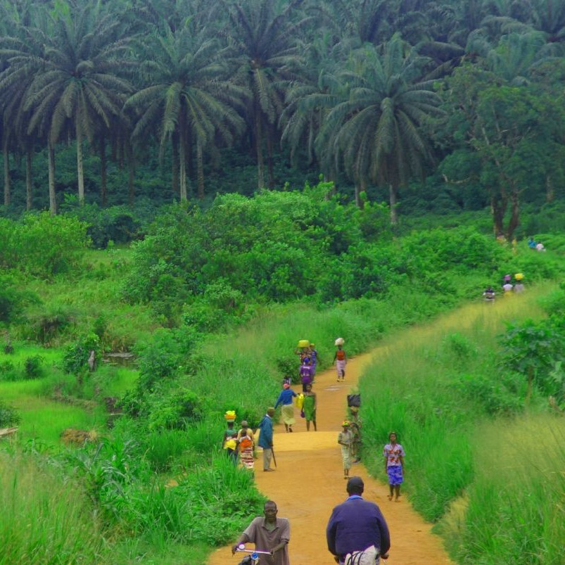
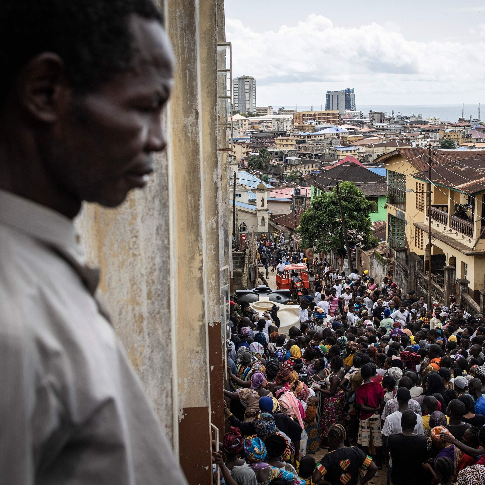

.jpg)
Sierra Leone
From Freetown's Cultural Melting Pot to the Pristine Beaches of Banana Island
My Sierra Leonean adventure began in Freetown, a city that embraces its diverse cultural influences with open arms. The bustling streets of Lumley Beach Road hummed with activity, as locals and visitors mingled at vibrant markets and seaside cafes. The mix of languages, from Krio to English and beyond, created a harmonious blend of cultures. In Freetown, I had the privilege of attending a traditional Poro Society ceremony, a secret male initiation rite of the Mende people. While I couldn't participate in the ritual itself, I observed the elaborate dances, mask performances, and symbolic storytelling that are central to this sacred tradition.
 My journey led me to Bonthe, a historic island town on Sherbro Island. The town's charming colonial-era architecture and cobblestone streets offered a glimpse into Sierra Leone's colonial past. Visiting the old British Consulate, I could almost hear echoes of bygone diplomatic discussions. In Bonthe, I participated in a fishing excursion with local fishermen, casting nets and learning about their traditional fishing methods. It was a hands-on experience that deepened my appreciation for the importance of fishing to the local economy and culture.
My Sierra Leonean odyssey continued to Banana Island, a pristine sanctuary off the coast. The island's palm-fringed beaches and crystal-clear waters beckoned with the promise of tranquility. Snorkeling amidst vibrant coral reefs, I encountered a kaleidoscope of marine life, from colorful fish to graceful sea turtles. On Banana Island, I joined a traditional Krio storytelling session by moonlight. Gathered around a campfire, locals shared captivating tales of their ancestors and the island's history, passing down the oral traditions that define Sierra Leonean culture.
Venturing inland, I explored Kenema, a city nestled in the heart of Sierra Leone's diamond-rich Kono District. Visiting a local diamond mine, I learned about the challenges and ethical concerns surrounding the diamond industry. Meeting miners and hearing their stories shed light on the complex relationship between diamonds and the country's history. In Kenema, I had the opportunity to partake in a traditional Mende mask dance, a cultural expression that embodies the spiritual connection between the people and the land. The intricate masks and elaborate dance moves told stories of Sierra Leone's indigenous traditions.
 My Sierra Leonean journey took me to Kabala, a town nestled in the lush highlands of the Northern Province. The rolling hills and verdant landscapes provided a stark contrast to the coastal regions. Hiking through the hills, I encountered remote villages and met locals who warmly welcomed me into their homes. In Kabala, I attended a Temne chiefdom ceremony, where the community came together to celebrate their cultural heritage through dance, song, and storytelling. It was a testament to Sierra Leone's rich tapestry of ethnic diversity.
As I reflect on my odyssey through Sierra Leone, I am deeply moved by the country's resilience, natural beauty, and cultural vibrancy. From the cosmopolitan streets of Freetown to the pristine shores of Banana Island, from the historical charm of Bonthe to the rugged highlands of Kabala, Sierra Leone offers a wealth of experiences waiting to be uncovered.
Join me in my future travels as I continue to explore the hidden treasures of Africa and beyond. Until next time, keep your wanderlust alive and your heart open to the wonders of the world.